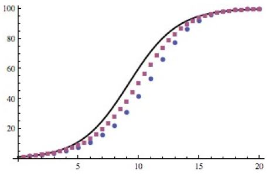

4 Dynamic models Practical
4.1 Introduction to deSolve
4.1.1 A bit of theory
4.1.1.1 Rationale:
We have discussed the solutions of two differential equations using the fact that we were able to solve them analytically:
\[\begin{aligned} \frac{dN}{dt} &= rN \rightarrow N(t) = N_{0}e^{rt} \\ \frac{dN}{dt} &= rN\left(1-\frac{N}{K}\right) \rightarrow N(t) = \frac{K}{1+\frac{K-N_{0}}{N_{0}}e^{rt}}\end{aligned}\]
However, most differential equations cannot be solved analytically. For example, with the predation model presented in Dynamic Models Lecture 2, we cannot obtain a mathematical formula giving the number of bacteria (prey) \(N(t)\) and amoeba (predators) \(P(t)\) as functions of the parameters and initial conditions. Instead we have to resort to numerical methods to obtain approximate values of \(N(t)\) and \(P(t)\) for any given set of parameter values. Since this is the case for the vast majority of differential equations of interest in science, such numerical methods have been developed for many years and the advent of computers have made them increasingly popular. Throughout this course we will be using a ready-made package in R called
deSolve which can solve numerically virtually any system of ordinary differential equations (ODE).
Note: in earlier versions of R, the package was called odesolve but worked in the same way.
4.1.1.2 A few notes on Euler’s method
Although we will be using deSolve as a black box, for your information here is a very basic introduction to how differential equation solvers work. The general principle was devised by Swiss mathematician Leonhard Euler (1707–1783). Among many other things, Euler also came up with the fascinating formula \(e-i\pi + 1 = 0\), but that’s another story.
Here I illustrate the method with a single differential equation, but it can easily be extended to any number. Consider the logistic growth model with an arbitrary choice of parameter values: \(dN/dt = 0.5N(1 - N/100)\) and initial condition \(N(0) = 1\).
The trick is then to ‘discretise’ this equation, i.e. replace the infinitesimal variations of the differential equation by small ‘discrete’ variations. Remember the formal definition of the derivative of a function: \[\frac{dN}{dt} = lim_{\delta t\rightarrow 0}\frac{N(t+\delta t)-N(t)}{\delta t}\]
We then approximate the variations during a small time step \(\delta t\) as follows:
\[ \frac{N(t+\delta t)-N(t)}{\delta t} \approx 0.5N(t)\left( 1-\frac{N(t)}{100}\right)\]
So, if we know the value of \(N(t)\) at a given time \(t\), we can estimate the value at the next time point:
\[ N(t+\delta t) \approx N(t) + 0.5N(t)\left( 1-\frac{N(t)}{100} \right) \delta t\] If you know the initial density, say \(N(0) = 1\), and you choose \(\delta t = 0.1\), then you can iteratively calculate approximate values of \(N(0.1) \approx 1.0495\), \(N(0.2) \approx 1.1014\), etc. which eventually enables you to reconstruct the numerical solution \(N(t)\).
The only problem is that \(N(0.2)\) is estimated based on an approximate value of \(N(0.1)\), and so on. So, as you iterate the process, you accumulate errors and you run the risk of seeing your ‘numerical solution’ drift away from the true solution.
Of course, the smaller \(\delta t\), the more accurate the discretisation. See the graph below, where the solid curve is the true solution of the above differential equation (which, in this case, can be solved analytically) and the dots are two ‘discretised solutions’, using \(\delta t = 1\) (discs) and \(\delta t = 0.5\) (squares):

So, that’s basically what deSolve or any other software does to generate ‘numerical solutions’ of differential equations. They actually use more sophisticated algorithms (but based on the same ‘discretisation’ principle) in order to reduce the potential ‘drift’ from the (unknown) true solution. Different algorithms will perform better on different classes of models, but they are not 100% accurate. One of the most popular class of algorithms for the kind of ODEs used in population dynamics was designed by German mathematicians Runge & Kutta almost 100 years ago.
4.1.2 The return of the logistic model
4.1.2.1 Load the deSolve package
But enough theory for now. Let’s shut the bonnet and sit behind the wheel! We’ll start by re-visiting the logistic growth model to get you acquainted with deSolve.
Launch RStudio. The first thing to do is check whether the deSolve package is already installed, as it does not come with the R base. In RStudio, click on the “Packages” tab in the bottom-right window to see the list of R packages installed on your computer (those with a checked box are not only installed on the computer but currently loaded in your R session so that you can use them). If deSolve is not in the list, click on Install Packages, this opens a window asking you which package you which to install: type deSolve and click on Install (you may be asked first to choose a “Mirror”: scroll down the list to UK, and choose London or Bristol). This will download the package from the internet, which means your computer needs to be connected. You only need to do that once on any computer.
Note: Instead of using RStudio’s interface, you can type the following instructions in the console: library() will open a window with the list of installed packages. If deSolve is not there, close the window, return to the R console and type: install.packages('deSolve').
Once a package is installed on a computer, you still need to tell R to load the package into the memory every time you start a new session. In RStudio you can do that by checking the box of the package in the Packages window, but if you need to use the package in a script file, it is safer to type the command library(deSolve).
We’re now ready to start. Open a new script file for this practical code, write some comments (starting with a #) that will remind you what’s in this file next time you open it, and type the first instruction:
library(deSolve)REMEMBER TO SAVE YOUR FILE REGULARLY
4.1.2.2 Define the model
First, we must define a function logistic_dyn() that returns the value of the derivative \(dN/dt\), in this case \(rN(1 - N/K)\), given the values of \(r\), \(K\) and \(N\). This function will be used by the differential equation solver to generate the numerical solution \(N(t)\), so we have to follow specific rules set by the authors of the deSolve package:
- The function that defined the derivative must take three arguments: time, a vector containing the values of the variables (in this case a single variable \(N\)) and a vector of parameter values (in this case two parameters \(r\) and \(K\)).
- The function must return a list containing the value(s) of the derivative(s).
Note that the name of the function, logistic_dyn, is arbitrary; you may call it anything you like. Type the following code in your script file:
#This function calculates dN/dt for the logistic model
logistic_dyn <- function(t, N, par){
#rename the parameters
r <- par[1]
K <- par[2]
#calculate the derivative
dN <- r*N*(1-N/K)
#last instruction: return a list
return(list(dN))
}Note that before calculating the derivative, I defined a few local variables \(r\), \(K\) and \(dN\) (which only ‘exist’ inside the function, so they do not appear in the Workspace) for convenience. A shorter version of the function, without local variables, would be:
logistic_dyn <- function(t, N, par) {
list(par[1]*N*(1-N/par[2]))
}but you’ll probably agree that it is less easy to read for a human being. The only case when you should favour the latter version is when speed (or memory) is an issue.
Next, create three variables:
- a vector of parameter values (2 values in the order specified in
logistic_dyn: \(r\) first and \(K\) second):
logistic_par <- c(1, 100)- a vector of time steps at which we want values of \(N\) (note that
deSolveautomatically computes many intermediate time steps as explained in the preamble):
logistic_t <- seq(0, 20, 0.1)- the initial state of the system (in this case just the value of $N_{0}):
logistic_init <- 1We can then feed all that into a function called lsoda(), which is the only function from the deSolve package that we’re going to use, and store the result into a variable:
logistic_sol <- lsoda(logistic_init, logistic_t, logistic_dyn, logistic_par)Save your file and run all your code so far (click on Source in the top right corner of the script window). In the Workspace window, you should now see the variables you’ve defined under Values, or your new function logistic_dyn, under Functions. To visualise the contents of the function, click on its name in the Workspace window, or type fix(logistic_dyn) in the Console: this opens a separate window that you must remember to close before you can re-gain access to the command line. You can also look at the contents of the matrix logistic_sol in the same way: the first column is your logistic_t vector (i.e. the time steps) and the second column contains the corresponding values of \(N(t)\).
4.1.2.3 Version with names parameters
A feature of R that can make your life a bit easier when using lsoda() is the ability to name the elements of a vector. When we defined logistic_par earlier, we had to remember that the first element must be \(r\) and the second one \(K\). Not too bad with only two parameters, but it can be more of an issue with higher numbers of variables and parameters, as we’ll see next in the next part.
Here is an alternative version of the function logistic_dyn which assumes that the third argument, param, is a vector whose elements are named \(r\) and \(K\):
# Calculate the derivative dN/dt using a named vector as its third argument
named_logistic_dyn <- function(t,N,par) {
# Tell R to use the names of the elements of par (r and K)
with(as.list(par),{
return(list(r*N*(1-N/K)))
})
}The syntax is a bit complicated because we have to tell R that \(r\) and \(K\) (which are undefined symbols) will actually be defined within par. That’s the role of the with(x,{...}) statement. A further complication is that with(x,{...}) only works with a named list as its first argument, not a named vector, which is why we wrote with(as.list(par),{...}). As a result, every instruction that comes inside { } in the second argument of with(x,{...}) can make use of the names of the elements of par.
Once the function named_logistic_dyn has been defined, it can only be used with a named vector as a third argument. So, in our case, we must define a new vector:
named_logistic_par <- c(r=1, K=100)Then you can use lsoda as follows:
named_logistic_sol <- lsoda(logistic_init,
logistic_t,
named_logistic_dyn,
named_logistic_par)This will give you exactly the same result as logistic_sol above. So, with this method, you don’t need to remember the order of the parameters in the function that calculated the derivative, but you need to remember their names.
4.1.2.4 Plot the dynamics
The next step is to plot the dynamics of \(N(t)\) using the contents of logistic_sol:
plot(logistic_sol[,1], logistic_sol[,2], type='l', main='Logistic growth', xlab='t', ylab='N')
# Just to check, you can superimpose the graph of the analytical solution of the logistic growth model
points(logistic_t,1/(0.01+0.99*exp(-logistic_t)),col='red')logistic_par) or different initial values (logistic_int).
4.1.3 The revenge of the amoeba
4.1.3.1 Code the model
We’ll follow the template described in the previous section, starting with the core function that calculates \(dN/dt\) and \(dP/dt\). The only difference is that we now have 2 variables, so the function must return a list of two derivatives. There are 5 parameters, so you must be extra careful with the order in which you store them in the vector. To be safe, we’ll enter them in alphabetical order:
# Definition of the predation model
predation_dyn <- function(t,var,par) {
a <- par[1]
b <- par[2]
d <- par[3]
K <- par[4]
r <- par[5]
N <- var[1]
P <- var[2]
# Derivatives
dN <- r*N*(1-N/K)-a*N*P
dP <- -d*P+b*N*P
return(list(c(dN,dP)))
}
# Parameter values, initial variables values and the vector of time values:
predation_par <- c(a=0.02, b=0.01, d=0.3, K=100, r=1)
predation_init <- c(N=100, P=1)
predation_t <- seq(0,40,0.2)
# Numerical solution
predation_sol <- lsoda(predation_init,
predation_t,
predation_dyn,
predation_par)The resulting matrix has 3 columns: predation_sol[,1] contains the time points, predation_sol[,2] the values of \(N\) and predation_sol[,3] the values of \(P\).
Once again, we only defined the local variables \(a\), \(b\), \(d\), etc. to make it easier to read the code and spot any mistake. But we could write a more concise version using only par[1], par[2], etc. instead. Alternatively, you could use with(as.list(c(par,var)),{ ... }) as we saw in question 2-c above.
4.1.3.2 Plot some graphs
Since we have two variables in this model, we can generate more diverse graphs. You should now be getting familiar with plotting instructions, so I’ll let you work out how to produce the following graphs.
- Plot \(N(t)\) and \(P(t)\) against time, together on a graph, using
plot(),lines()andlegend().

- Plot \(N\) and \(P\) in the phase plane. Use the notes from lecture 2 to find the equations of the nullclines, and draw them using
abline(). Finnaly add the equilibrium points.
4.1.3.3 Discussion and further investigations
The model has three equilibrium points, determined by the values of the parameters. In the example above, the dynamics converged to the equilibrium point where the prey and predator coexist.
Do you think it would be possible to reach another equilibrium point from different initial conditions?
What do the dynamics look like if we start from \(N(0) = 1\) and \(P(0) = 100\)?
Is that what you expected from a biological point of view? Hopefully! No food for the predators but because this is deterministic, the populations still reach the equilibrium. What limitations of the model does this suggest? No stochastic die out.